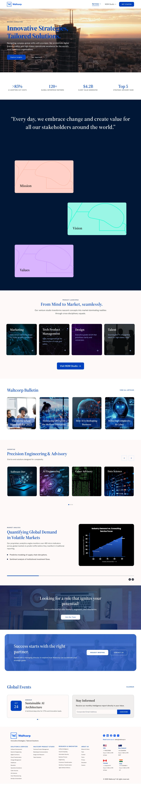
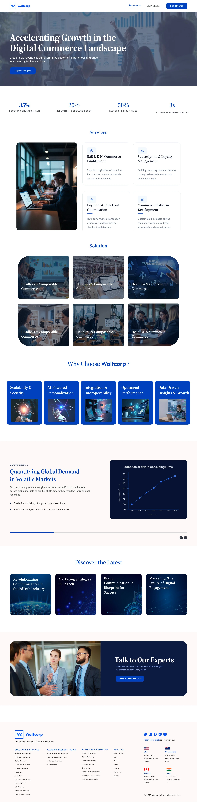
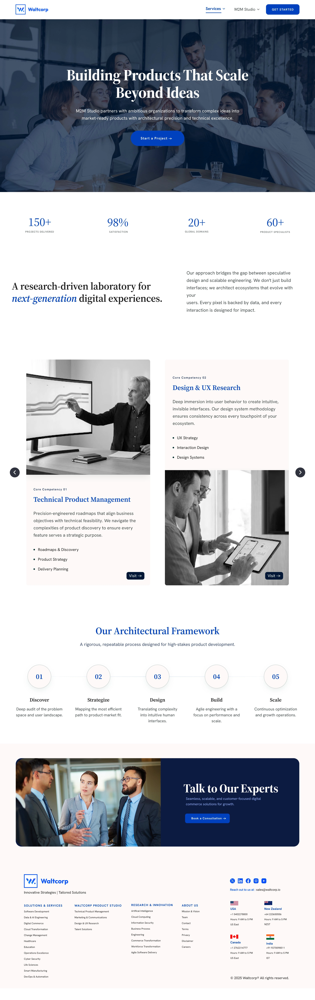

03The Challenge
Making complex services easier to understand
WaltCorp brings together multiple technology, consulting and digital capabilities. The challenge was to create a website that communicates this breadth clearly without overwhelming visitors.
The experience needed to feel credible for an enterprise audience while remaining modern, simple and easy to navigate.
04Structuring the Experience
From complexity to clarity
The website architecture was organized around the questions a prospective client needs answered: What does WaltCorp do? How can it help? What does its expertise look like? And how can I take the next step?
- 01
Discover
What does WaltCorp do?
- 02
Explore
How can it help?
- 03
Build Trust
What does its expertise look like?
- 04
Take Action
How do I take the next step?
05Designing the Experience
Three principles
Clear service hierarchy
Structured multiple capabilities into clear, scannable sections so visitors can quickly understand what WaltCorp offers.
Strong enterprise presence
Used typography, imagery, spacing and the blue brand language to create a professional and credible digital presence.
Content-led experience
Balanced business information, services, insights and CTAs so visitors can explore without feeling overwhelmed.
06Selected Website Experience
Selected screens
A few pages from the wider site. Scroll inside each window to see the full page.
Homepage
The homepage establishes WaltCorp's positioning, communicates its capabilities and gives visitors a clear path into the wider ecosystem.
Scroll inside the window

Company & Vision
The company section builds context around WaltCorp's vision, values and broader impact.
Capabilities
Service pages translate complex capabilities into focused, easy-to-understand experiences.
Technical Product Management

Digital Commerce
Technology & Innovation
Specialized technology experiences follow the same visual and structural language while allowing the content to adapt to the subject.

M2M Studio
A focused service experience designed to communicate a specialized offering without breaking the overall WaltCorp visual system.

07System Thinking
Built as a scalable system
The visual language was designed to remain consistent across different service pages while giving each business area enough flexibility to communicate its own content.
#0041BF
#2858B0
#001434
#FDF9F8
08Final Takeaway
Designing for clarity, not complexity
The final experience gives WaltCorp a more structured digital presence — helping visitors understand a broad range of capabilities without making the website feel overwhelming.
This project strengthened my approach to designing B2B experiences where visual design, information hierarchy and business communication need to work together.